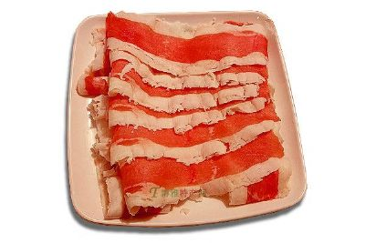

手把肉是呼伦贝尔草原蒙古、鄂温克、达斡尔、鄂伦春等游牧、狩猎民族千百年来的传统食 品。即用手把着吃肉之意。羊、牛、马、骆驼等牲畜及野兽的肉均可烹制手把肉，但通 常所讲的手把肉多指手把羊肉而言。 手把肉是草原牧民最常用和最喜欢的餐食，也是他们招待客人必不可少的食品。常年似乎已 形成这样一种概念，即到草原观光旅游不吃一顿手把肉就算没完全领略到草原食俗风味和情 趣 ，虚此一行。牧民不用手把肉招待客人，就不能完全表达自己的心意。因此，用手把羊肉款 待远方客人，在呼伦贝尔地区已成为一种定规。 手把肉的制作和吃法也别具一格。 通常选用膘肥肉嫩的小口羊一只，先拔去胸口近腹部毛，后用刀割开二寸左右的直口，将手 顺口伸入胸腔内，摸着大动脉将其掐断，使羊血都流聚在胸腔和腹腔内，谓之“掏心法”。 这种杀羊法优于“抹脖杀羊法”，即羊血除散在腔内一部分外，还有少部分浸在肉里，使羊 肉呈粉红色，煮出来味道鲜美，易于消化，羊肉干净无损。然后剥去皮，切除头蹄，除净内 脏和腔血，切除腹部软肉。并按羊各关节，将全羊带骨制成数十块，放入不加盐和其他佐料 的白水锅内，用大火烧煮，保持原汁原味，适当控制火候。只要肉已变色，一般用刀割开， 肉里微 有血丝即捞出，装盘上席。大家围坐一起，一手握刀，一手拿肉，用刀割、卡、挖、剔。手 把肉鲜而不膻，肥而不腻。这是牧民的常用食法。如在城市的宾馆餐厅、饭店，还可用芝麻 酱 、香油、韭菜花、辣椒油、腐乳汁、青酱油、味精等调成佐料，装入碗中，采用割肉蘸佐料 食用。这种草原、城市结合起来的手把羊肉的食法也颇具风味。如果你头一次在餐桌上看 到 人们(包括自己)用刀割下自己所看中的羊肉，用手一块块送入口中的时候，除了感到肉的鲜 嫩味美之外，还会感到新奇有趣。
烤全羊是蒙古民族的餐中之尊。《达斡尔蒙古考》中载道：“餐品至尊，未有过于乌查（即烤全扬）者”。烤全羊蒙语称“昭木”。据史料记载，它是成吉思汗最喜爱吃的一道宫廷名菜，也是元朝宫廷御宴“诈马宴”中不可或缺的一道美食。蒙古族这种传统而古老的风俗，至今还保留着，以前只供蒙古贵族享用，一般牧民根本吃不到的烤全羊。现如今，烤全羊已成为内蒙古草原饮食文化中一枚璀璨绚烂的明珠。随着历史的发展和蒙古族人民生活水平的提高，烤全羊的方法也随之演变。原始的烤全羊，是将开膛去皮的整羊架于火上烘烤。烧烤时要用杏木疙瘩烧旺的红火，须火旺而无烟方可。不时将白条羊在火上左右翻转，一直烤到表面金红油亮，香味喷发，外焦里嫩为止。烤熟后从架子上卸下，用刀割而食之，不加油盐，不加任何作料，却有纯朴天然的香味。现在，内蒙古的一些饭店和旅游景点为使烤全羊的肉质更鲜美，在制作工艺上都融入了自家的小秘方，所以烤全羊的制法各色纷呈，但大体上基本一致：烤全羊要选择膘肥体壮的4齿3岁绵羊作原料，宰杀后用80度的热水浇烫羊的全身，趁热煺去羊毛；挖除内脏，用水洗净胸腔、腹腔，再用碱水洗净全身羊皮。在腹腔和后腿、五叉等肉层较厚的部位，用刀割开小口，然后填进各种佐料腌渍入味，外皮涂抹适量麻油和酒。
原产地标识——“赤峰黄玉米”常年产量220万吨，商品量180万吨。
乌珠穆沁羊肉乌珠穆沁羊产于内蒙古自治区锡林郭勒盟东部乌珠穆沁草原，故以此得名。主要分布在东乌珠穆沁旗和西乌珠穆沁旗，以及毗邻的锡林浩特市、阿巴嗄旗部分地区。乌珠穆沁羊属肉脂兼用短尾粗毛羊，以体大、尾大、肉脂多、羔羊生产发育快而著称。乌珠穆沁羊是在当地特定的自然气候和生产方式下，经过长期的自然和人工选择而逐渐育成的。外形特征乌珠穆沁羊体质结实，体格大。头中等大小，额稍宽，鼻梁微隆起。公羊大多无角，少数有角，母羊多无角。胸宽深，肋骨开张良好，胸深接近体高的1/2，背腰宽平，后躯发育良好。肌肉丰满，结构匀称。四肢粗壮，有小脂尾。毛色以黑头羊居多，约占6.2%，全身白色者约占10%，体躯花色者约11%。生产性能乌珠穆沁羊的饲养管理极为粗放，终年放牧，不补饲，只是在雪大不能放牧时稍加补草。乌珠穆沁羊生长发育较快，2.5～3月龄公、母羔羊平均体重为29.5和24.9公斤；6个月龄的公、母羔平均达40和36公斤，成年公羊60～70公斤，成年母羊56～62公斤，平均胴体重17.90公斤，屠宰率50%，平均净肉重11.80公斤，净肉率为33%；乌珠穆沁羊肉水份含量低，富含钙、铁、磷等矿物质，肌原纤维和肌纤维间脂肪沉淀充分。产羔率仅为100%。 乌珠穆沁羊适于终年放牧饲养，具有增膘快、蓄积脂肪能力强、产肉率高、性成熟早等特性，适于利用牧草生长旺期，开展放牧育肥或有计划的肥羔生产。同时，乌珠穆沁羊也是做纯种繁育胚胎移植的良好受体羊，后代羔羊体质结实抗病能力强，适应性较好。 
扎兰屯市沙果栽培历史久远，是我国沙果的主产区，出产的黄太平、大秋果、海棠果等品种远近闻名，是当地招待贵宾、佳朋不可缺少的果品。扎兰屯沙果特定外观突出表现在：果形如乒乓球大小、色泽鲜艳、果面光滑且有光泽，果味酸甜、多汁、香气浓郁，果心肉质呈油浸状，风味独特，具有驱虫明目之功效。扎兰屯沙果饮品、沙果干食品已名扬海内外、享誉港澳台。扎兰屯沙果系农业部地理标志保护农产品、绿色食品。
（1）土壤地貌情况：扎兰屯沙果产区主要以山区丘陵漫岗为主，山区丘陵面积占总面积的69％，北部属雅鲁河谷平原，中部属架子山低山丘陵，南部属基尔果山中山丘陵。主产区土壤以暗棕壤土为主，椐测定有机质含量6.22%以上，全氮平均含量2.34g／kg，有效磷26mg/kg，速效钾大于65mg/kg，pH值4.9-7.7左右。土层深厚，土壤肥沃，保水保肥能力强，适宜沙果的生长。
（2）水文情况：扎兰屯沙果产区内年平均降水量718.6毫米，水利条件配套齐全，地下水源充足，农田排灌设施配套，水质清澈纯净，水资源保持良好。无污染，达到了旱能浇、涝能排。河流分为雅鲁河、济沁河、绰尔河3个流域，年平均径流量25118万立方米。水资源丰富，其中河川流量为21.25亿立方米，地下资源5.02亿立方米。由于扎兰屯沙果产区河流众多，南北纵向山谷常年有河水流出，呈阶梯状分布，密度较大，流经沙果产区，水质清澈纯净，水资源保持良好，地下水矿物质含量丰富，为扎兰屯沙果生产创造了得天独厚的自然条件。
(3)气候情况：属中温带大陆性半湿润气候，其特点：春季干旱、风大，升温快；夏季炎热多雨，降水充沛；秋季降温剧烈、昼夜温差大；冬季漫长寒冷，多雪。全年日照时数2411小时，年平均气温3.3C°，≥10°C的有效积温平均达2147°C，年降雨量在450-550mm，降水主要集中在7-8月份，无霜期短，平均110-135天，独特的气候条件，非常适于生产优质沙果。
开鲁红干椒，内蒙古自治区开鲁县特产，中国国家地理标志产品。开鲁县是中国最大的县域红干椒生产基地。开鲁红干椒皮红肉厚、色质纯正、果实细长、品质优良，产品销往中国国内20多个省自治区、直辖市，并出口新加坡、韩国、日本、俄罗斯等国家。开鲁县是内蒙古古县之一，土地资源丰富，县内地势平坦土壤肥沃，土质以黑 图1 开鲁红干椒种植基地白相间五花土为主，有机质含量适中，光照资源充足，年平均日照时数3100小时左右，年降水在340毫米左右，虽然降水少，但88.6%都集中在作物生长的5~9月份，属雨热同季，条件极适宜红干椒的生长。.品质特点据《开鲁县志》记载：红干椒在开鲁已有30多年的种植历史，种植规模遍布全县各个乡镇，是非常有特色的农产品，其皮红肉厚、色质纯正、果实细长、品质优良，除维生素、辣椒素和各种营养物质含量比其他地区生产的同类产品较高外，还具有特别香浓的辣味，被称为“香辣型”，是辣椒中之上品，更是人们生活中必不可少的调味品。
扎兰屯黑木耳生产历史悠久，从康熙28年(1689年)就是当地招待贵宾不可缺少的佳肴，被称为“素中之荤”。扎兰屯黑木耳采用多年生长的柞木段或柞木锯沫，用人工栽培方法进行生产。外在感官特征表现在：黑中透明、型如人耳、耳朵硕大、耳肉肥厚、口感清脆、体态宛如莲花，并含有蛋白质、粗纤维、钙、磷、铁、维生素B1、B2等营养元素。农业部农产品质量安全中心金发中副主任称赞扎兰屯黑木耳为木耳中极品，具有药用和保健之功效。扎兰屯黑木耳系农业部地理标志保护农产品、绿色食品。（1）土壤地貌情况：扎兰屯行政区划面积1.69万平方公里，背倚大兴安岭，面眺松嫩平原，地貌大体呈现“七林二草一分田”之格局，森林覆被率达67.78%，是全国东北地区重要的生态屏障。全市土壤类型为黑土和草甸土，土壤pH值在4.3-7.9之间，有机质含量平均6.11％，属大兴安岭西草原区向岭东松辽平原农业区过渡带，低山、高丘、河谷相间分布，土质肥沃，耕性良好。（2）水文情况：境内水资源丰富。降水为地表水的主要来源，降水比较充沛集中，年降水量460-580毫米。现有渠首工程12处，较大渠道3处，小型水库2座，塘坝5处，300多座渠系建筑物。河川径流量季节变化很大，过境水的利用量较小，水资源比较丰富，地下水基流量4.43亿立方米，占地下水资源量的23.7%，可开发量1.11亿立方米，占地下水基流量的25%，水质保持良好。 （3）气候情况：扎兰屯属中温带季风气候区，四季分明，雨热同期。全年日照时数2619小时，≥10℃的有效积温平均达2515℃，年降雨量450-550mm，年无霜期110-130天。对优质黑木耳栽培极为有利。
敖汉小米 内蒙古自治区敖汉旗现辖行政区域 《敖汉旗人民政府关于界定敖汉小米地理标志产品保护范围的报告》，敖政发﹝2012﹞17号 敖汉旗农业标准：AN/T0001-2010《敖汉小米生产技术操作规程》